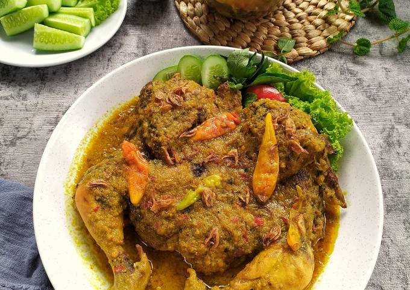
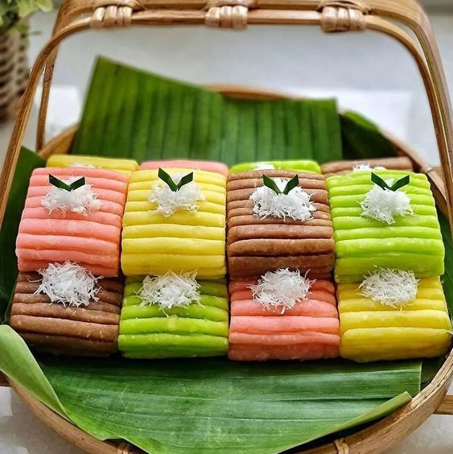
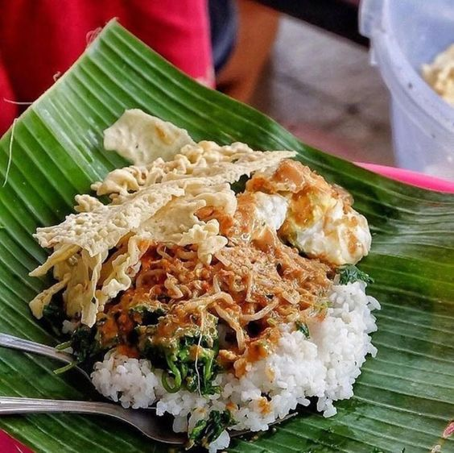

Tulungagung Local Food
Tulungagung, a city famous for its beautiful beaches, also has a wealth of delicious culinary delights. The combination of distinctive spices and local ingredients produces a unique taste that is hard to find anywhere else. In addition to the foods below, there are many more typical Tulungagung culinary delights that are worth trying. When in Tulungagung, we will not only enjoy its natural beauty, but we can also taste its authentic culinary delights.
Ayam Lodho
Ayam lodho is a typical Tulungagung culinary made from free-range chicken that is grilled and cooked in a mixture of spices and thick coconut milk. The word "lodho" in Javanese means tender. The long cooking process over low heat makes the coconut milk thick and the spices are absorbed until the meat feels tender and can peel off the bones. This typical food is usually served with savory rice (sega sedap) which is almost a kind of uduk rice. Ayam lodho has a distinctive grilled aroma combined with the aroma of spices.s
Getuk Lindri
Getuk lindri is an old-school snack typical of Tulungagung made from cassava, granulated sugar, and grated coconut. The name getuk comes from the "tuk-tuk" sound when pounding cassava, while lindri comes from rolled cassava dough. Getuk lindri has an elongated shape like noodles, and is usually made with a traditional mold or noodle mold. Getuk lindri dough is usually given coloring such as brown, green, and pink. This snack is usually served with grated young coconut topping.
Nasi Pecel
Pecel rice is one of Tulungagung's culinary heritages that should be preserved. With its distinctive taste, pecel rice is the right choice for breakfast or lunch. One of the characteristics of Tulungagung pecel rice is its peanut sauce which is rich in spices and has a slightly sweeter taste compared to pecel rice from other regions. The combination of finely ground peanuts, chilies, shallots, galangal, and various other spices produces a savory, spicy, and slightly sweet taste.